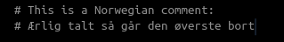
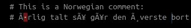

Locale is a set of parameters that determine the linguistic conventions used for formatting and displaying information such as text. These conventions can vary based on geographical regions, languages, and cultural norms. Locales are essential for ensuring that software applications can adapt to the preferences and conventions of different users and regions.
In R, locales play a crucial role in working with many data types in R, such as text, dates, number formatting, and so on. The locale setting affects functions that handle text manipulation, collation, and formatting. It is particularly important when dealing with multilingual text analysis, as different languages have distinct rules for character sorting, case sensitivity, and formatting.
We can check your locale with the Sys.getlocale() and set the locale in R using the Sys.setlocale() function. For example, we can set the locale to “en_US.UTF-8” for American English conventions, “fr_FR.UTF-8” for French conventions, “nb_NO.UTF-8” for Norwegian conventions. Here is an example of how sorting is affected by locale:
There are several different types of locales we can change:
LC Variant
Description
LC_COLLATE
Controls string sorting and comparison.
LC_CTYPE
Manages character encoding and case handling.
LC_TIME
Dictates date and time formatting.
LC_NUMERIC
Governs number formatting, including separators.
LC_MONETARY
Handles formatting of monetary values and currencies.
LC_MESSAGES
Influences language and format of system messages and output.
LC_ALL
Everything.
If we want to set all locales to one type, then we can run Sys.setlocale("LC_ALL", "en_US.UTF-8") (or the convention we want).
Encoding
Encoding is the process of converting information from one format into another. This is commonly encountered when dealing with text data in R. We can think of encoding as the instructions the computer follow in order to make some data input into understandable data output.
Character encoding is particularly important when dealing with text because it determines how characters are stored. Different encoding schemes assign unique numerical values to characters, symbols, and other textual elements. The most well-known character encoding standards include ASCII, UTF-8, UTF-16, and ISO-8859.
Because Windows operating systems carry a heavier legacy burden in that Windows was initially developed in a time where the ISO-8859-1 encoding variant was prevalent. Additionally, Microsoft has put a lot of effort into making systems and programs backwards compatible. Consequently, and in contrast to Unix-based systems such as MacOS and Linux, we can encounter some difficulties when dealing with text data in R on Windows.
In this section, we will give some tips and tricks for how to deal with encoding issues.
R-scripts
The problem most students will encounter when it comes to encoding is opening R-scripts with the wrong encoding. Typically, the Norwegian characters æ, ø, and å will often display as question marks, dots, or weird symbols in Rstudio if the script was made on one operating system and opened on a different one:

UTF-8

ISO-8859-1
This can easily be fixed within RStudio by opening the “File”-menu and selecting “Reopen with encoding”, and then select the encoding you want to open the script with. For instance, a Windows user opening a R-script made in Linux will want to reopen the script in “UTF-8”.
Text strings
When working with text in R, we often encounter strange behavior because of locale and encoding. It is important to be aware of these, and know how to fix potential issues.
Take this example:
example <-c("Norwegian", "Nørwegian", "النرويج")Encoding(example)
[1] "unknown" "UTF-8" "UTF-8"
example
[1] "Norwegian" "Nørwegian" "النرويج"
iconv(example, "UTF-8", "latin1")
[1] "Norwegian" "Nørwegian" NA
iconv(example, "UTF-8", "ISO-8859-1")
[1] "Norwegian" "N\xf8rwegian" NA
iconv(example, "UTF-8", "ASCII")
[1] "Norwegian" NA NA
The first element will work on most common encodings because it only contains letters in the English alphabet. The second element, containing the letter “ø” will not work in ASCII encoding. Do notice that “xf8” is the hexadecimal for “ø”.1 Finally, the third element, which is Arabic, will only work in UTF-8 (of the examples shown here).
If we get into trouble with our text, we can convert the encoding with the iconv() function:
txt_ex <-iconv("Øyvind Stiansen", from ="UTF-8", to ="ISO-8859-1")txt_ex
[1] "\xd8yvind Stiansen"
txt_ex <-iconv(txt_ex, from ="ISO-8859-1", to ="UTF-8")txt_ex
[1] "Øyvind Stiansen"
Be careful though! If the encoding is unable to handle the input, you can not recover the content:
txt_ex <-iconv("Øyvind Stiansen", from ="UTF-8", to ="ASCII")txt_ex
[1] NA
txt_ex <-iconv(txt_ex, from ="ASCII", to ="UTF-8")txt_ex
[1] NA
Footnotes
A list of these codes can be found here!. It can be useful for stuff like printing a snowman ☃ or a cat 🐈.↩︎